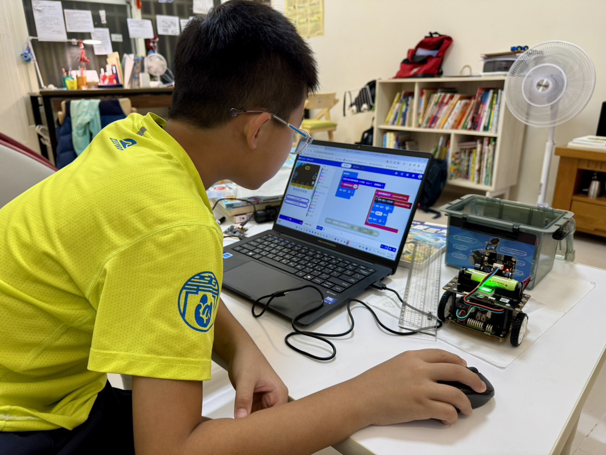
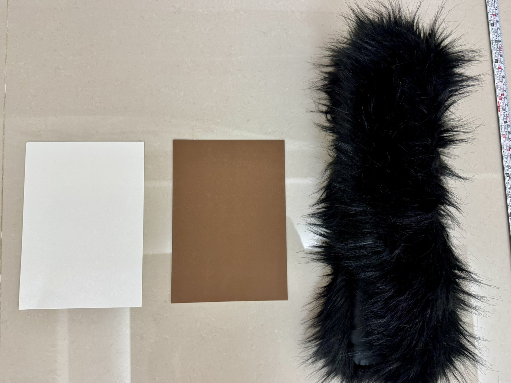
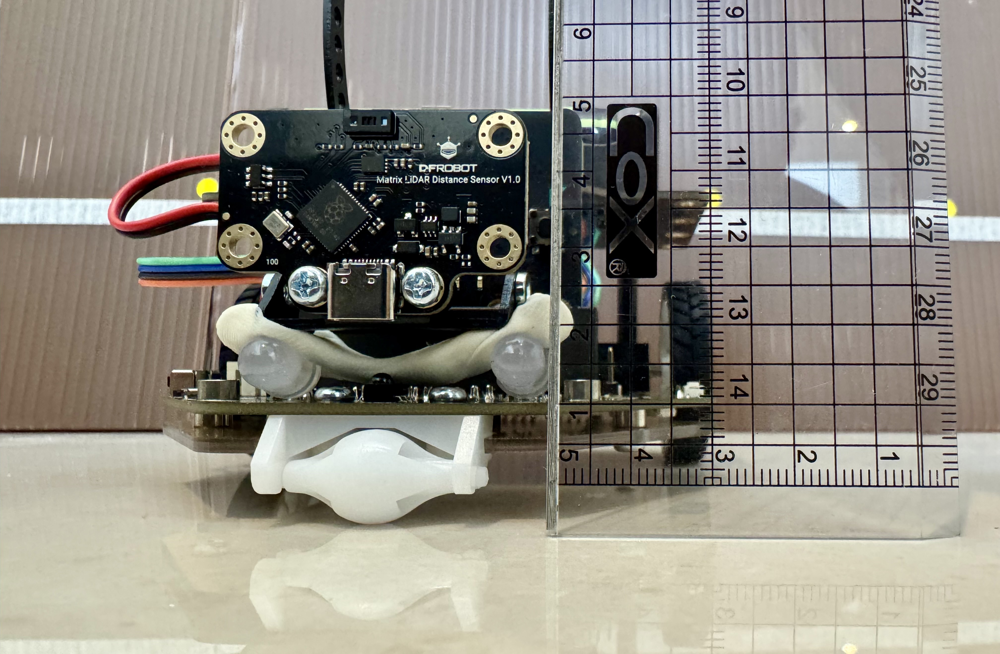
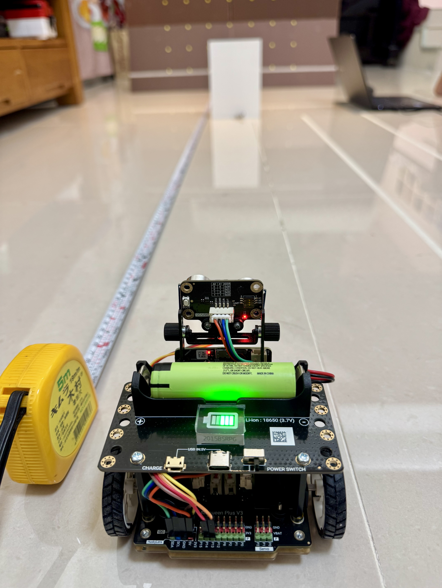
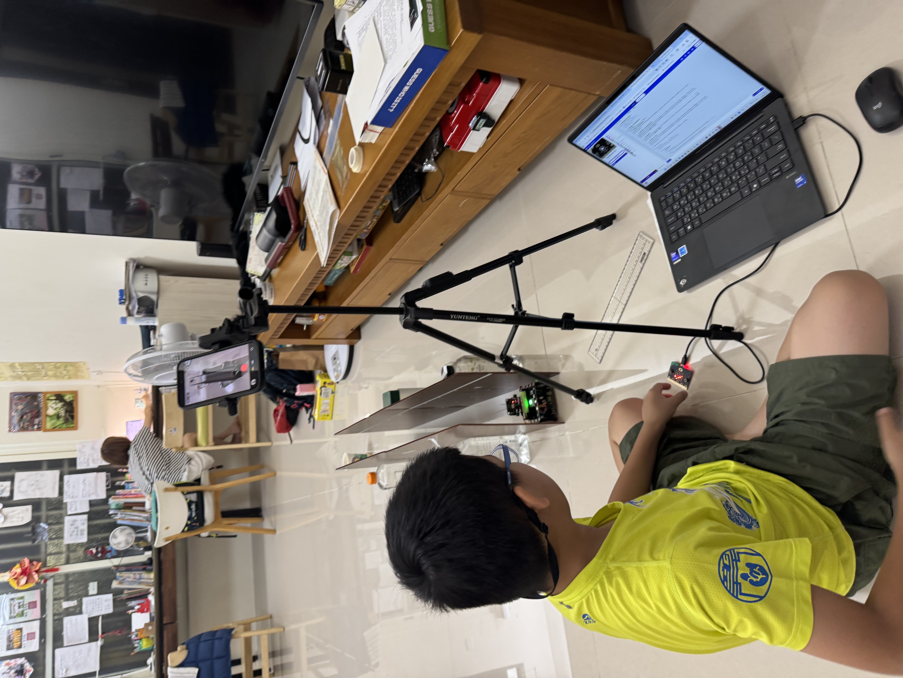
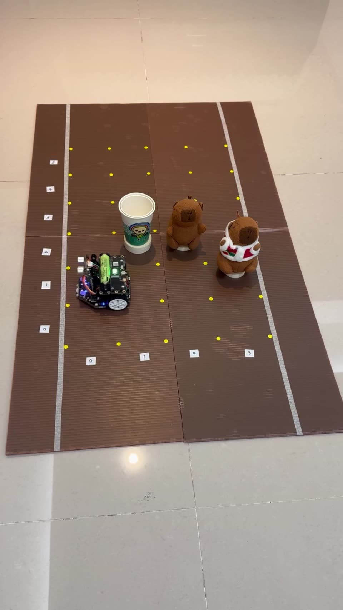
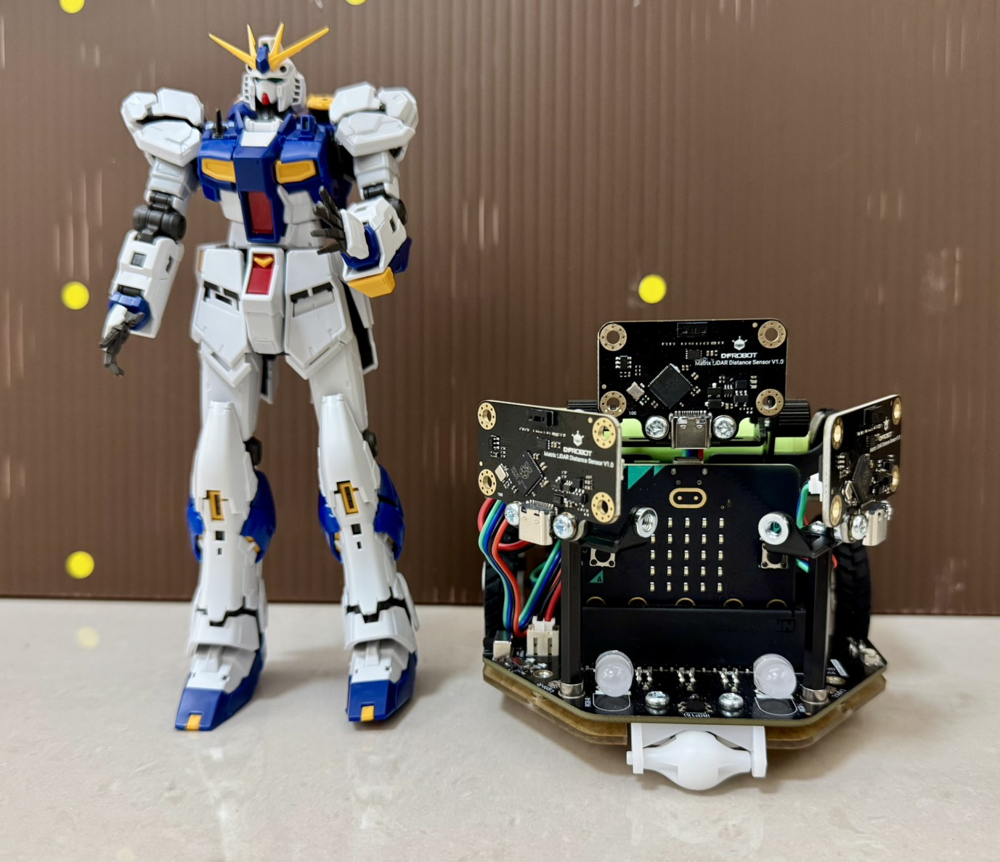

我們先確定感測器可不可靠，再找出怎麼裝最好，然後讓小車真的上路，最後補上轉彎時的死角。

三種光線下，30～150 公分平均最多只差 4.1 公分。

超音波量不到黑色絨毛；雷達在 60 公分內還是很準。

裝 10 公分最穩定；15 公分太高，一次都測不到。

40 cm/s 要滑 7.06 公分，所以要在 17.06 公分前煞車。

雷達 6 趟都成功；超音波在 40 cm/s 時煞車和轉彎都失敗。

8 趟都到終點、0 次撞到，還會自己從死路退出來。

只有前雷達會撞上；三顆雷達會停下來，等行人走過再走。
超音波是用聲音量距離，本來就不怕暗。它的聲音像扇子一樣散開，也很難像雷射一樣控制高度，比了意義不大。
煞車以後滑多遠，看的是車子的重量和輪胎，跟用哪一種感測器叫它停沒有關係。
雷射光怕「黑色吸光」，超音波怕「軟毛吸音」。石虎剛好又黑又毛茸茸，是比賽兩種感測器最好的地方。
我們的雷達只看中間大約 7.5 度，超音波大約 15 度、像扇子一樣散開。在窄窄的山路上，超音波很容易碰到兩邊的山壁，以為前面有東西。
在空地上，同一張地圖兩種感測器各跑一次，路線和時間幾乎一樣。這也說明超音波的問題是發生在「黑色毛毛」和「窄路」。